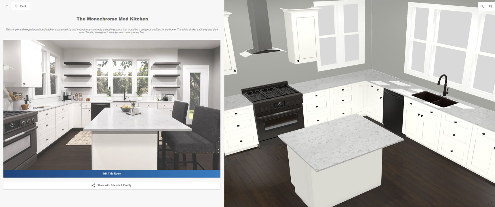
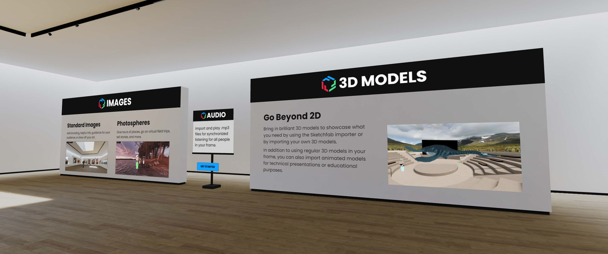
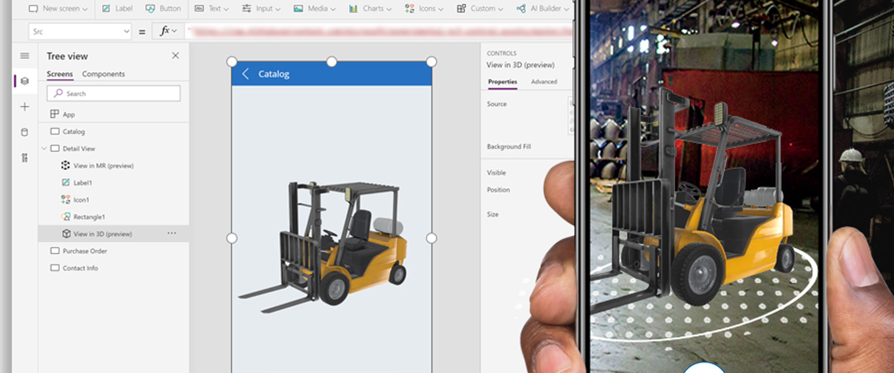
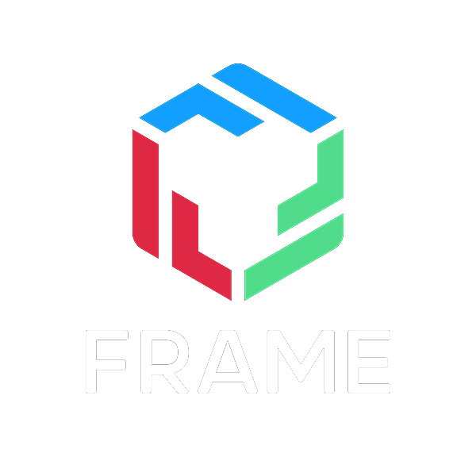

TOOLS
COMMUNITY
PARTNERS
TESTIMONIALS
INDUSTRIES
BABYLON NATIVE
LEARN
FEATURES
RELEASE NOTES
GET
PLAYGROUND
SANDBOX
NODE MATERIAL EDITOR
DOCUMENTATION
EXPORTERS
SPECTOR.JS
FORUM
COMMUNITY DEMOS
GAMES
ECOMMERCE
DIGITAL TWIN AND IOT
METAVERSE
BABYLON NATIVE RUNTIME
BABYLON REACT NATIVE
DOCUMENTATION
VIDEOS
BLOG
SPECIFICATIONS
FEATURE DEMOS



Marxent for their Room Planner used for Lowes and Macy's

learn.framevr.io
Microsoft PowerApps
Tweet from Francesco Michelini
See the tweet